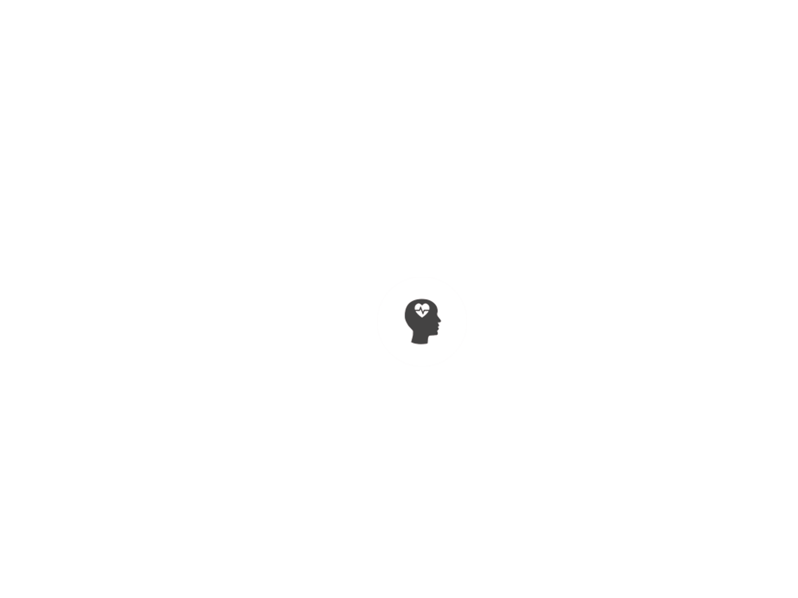

PSYKISK
OMRÅDE
Mennesker fødes med evnen til at kommunikere musikalsk, og høresansen er den sidste, der slukkes, når vi dør. Derfor giver det og-så god mening at bruge musikken terapeutisk. Musikterapi er psyko-dynamisk behandlingsform, der anvender musik og samtale. Typisk kan musikken være med til at løsne op for svære tanker og følelser og bane vej for dialog - både om det, der er svært og om det, pati-enten ellers er optaget af. Gennem musikalske improvisationer og andre musikalske udtryksformer kan den, der spiller, udtrykke og aflaste indre spændinger og forestillinger - uden at blive konkret fastholdt med ord i, hvad det er, der kommer til udtryk. At spille musik er også en fysisk aktivitet, hvor den der spiller kan mærke og høre sin egen tilstand - som et første skridt på vejen til at komme til at forstå den bedre. Når patienten er parat til det, arbejdes der med at sætte ord på/reflektere over det, der er sket under sammenspillet: Hvilke oplevelser har patienten haft undervejs? Og hvad har terapeuten lagt mærke til?
